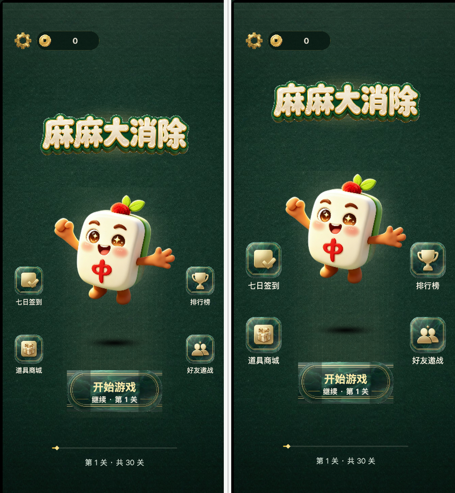
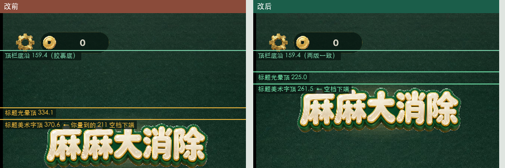
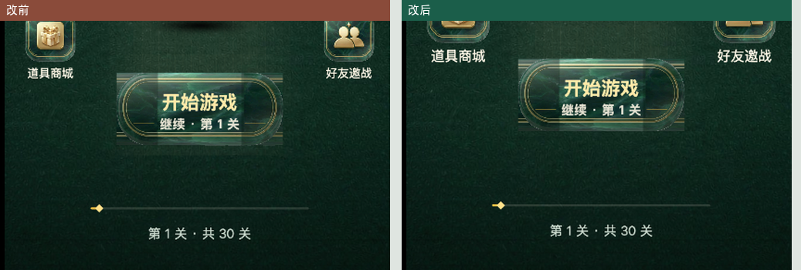

72-第37轮-主按钮-3款式对比.html），等你拍板后再接入 ——
没擅自改代码。
| 项 | 改前 | 改后 | 变化 |
|---|---|---|---|
FIT.HOME.top（纵向映射参数） | 110 | 205 | +95 |
| 顶栏底沿（金币胶囊底） | 159.4 | 159.4 | 不动 · 绝对定位 |
| 标题光晕顶 | 334.1 | 225.0 | ↑109.1 |
| 标题美术字顶 | 370.6 | 261.5 | ↑109.1 |
| 空档：顶栏底沿 → 标题美术字顶 | 211.2 | 102.1 | −51.7% |
| 空档：顶栏底沿 → 标题光晕顶 | 174.7 | 65.6 | −62.5% |
| 标题中心 y | 441.1 | 332.0 | ↑109.1 |
| 吉祥物中心 y | 840.3 | 769.3 | ↑71.0 |
| 主按钮中心 y | 1300.6 | 1273.5 | ↑27.1 |
| 主按钮顶边 | 1230.6 | 1203.5 | ↑27.1 |
| 进度条中心 y | 1525.6 | 1520.0 | ↑5.6（近似锚定） |
| 进度条底边 | 1570.6 | 1565.0 | ↑5.6 |
| 功能键图标（正方形素材） | 96 × 96 | 120 × 120 | +25.0% |
| 功能键节点总高 | 96 × 130 | 120 × 158 | +28 |
| 功能键文案字号 | 22 | 26 | +18.2% |
| 功能键 左列 x | 40 ~ 136 | 40 ~ 160 | 右缘 +24 |
| 功能键 右列 x | 614 ~ 710 | 590 ~ 710 | 左缘 −24 |
| 列内第一行真机中心 y | 931.6 | 862.2 | ↑69.4 |
| 列内第二行真机中心 y | 1160.4 | 1113.0 | ↑47.4 |


fromTop(胶囊中线 127.4)）后，
FIT.HOME.top = 110 那个位置已经没有元素了 ——
于是 [110, 标题光晕顶] 这一整段映射变成了纯空档。真机上就是顶栏底沿 159.4
到标题美术字顶 370.6 的 211.2（占可视高 12.8%；定稿稿只有 ≈58，占 4.3%）。top 挪到「第一个真实内容元素（标题光晕）的设计顶边」——
HALO_TOP 139.5 + YSHIFT 64 = 203.5 ⇒ 取整 205（留 1.5 余量）。top 一改，整页上半屏跟着上移。标题 ↑109.1、吉祥物 ↑71.0、
主按钮 ↑27.1、进度条 ↑5.6（越靠下越接近锚定，这是分段线性重映射的正常表现）。
top ≈ 237 时标题光晕顶正好落到
SAFE_TOP（183.3，胶囊底 + 24 间距）；top ≥ 270 光晕会盖住顶栏。
已选定的 205 距上限还有 32 的余量（可用空间 110 → 237 用掉 ≈75%），
取整时也刻意留了 1.5 —— 建议就此定稿，再往上压就只能动标题本身的纵向位置了。
top 那一项。
这样改动面最小、最好回退，也不会牵连主按钮与进度条的纵向口径。
72 号板的「方案 C」同一处病灶
buildMainButton() 未动）。真因已经锁定：
引擎把 btn9_mid 的 228×280 强制拉成 320×140（横向 ×1.40 / 纵向 ×0.50，
各向异性 2.81×），再叠一层中央白渐变 —— 而设计稿 v2 原文写的是
「两端圆角固定、中段水平拉伸」。三款候选（A=v1 / B=v2 / C=现状）已按正确九宫格渲染好，
见 72-第37轮-主按钮-3款式对比.html。
| 检查项 | 结果 |
|---|---|
类型检查 bash tools/tsc-check.sh | [✓] 0 错误 |
冒烟 node tools/g5-smoke.mjs | 通过 25 / 共 25 · 未捕获异常 0 · console error 0 |
版式审计 g5-device-audit.mjs --w 421 --h 927 | ✅ 无非页面节点越界（可视 0 ~ 1651） |
| web-desktop 构建 | 成功 · 入口文件齐全 |
| 前后取证方式 | git stash push -- <两文件> → 构建/审计 → git stash pop → md5 与备份逐字节一致 |
btn_primary · 拉伸 1.66×）/
方案 B（btn_primary_v2 · 拉伸 1.34×）/ 方案 C（维持现状）——
我的建议是 方案 B，理由与数据在 72 号板「四、我的建议」。top 也用到可用空间的 ≈75%，
这个幅度可以吗？还要更紧就得动标题的纵向位置了。